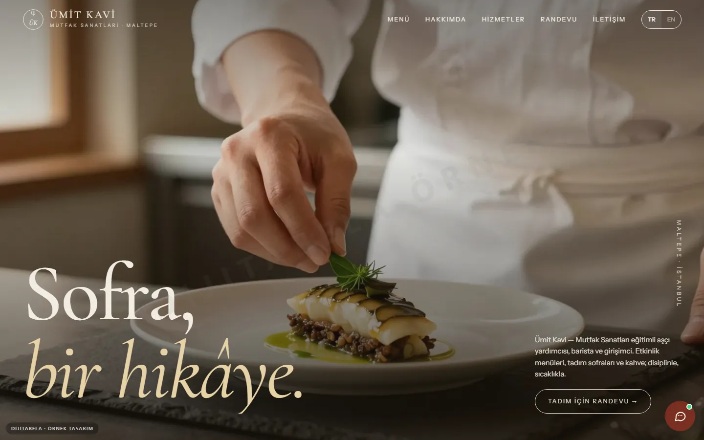
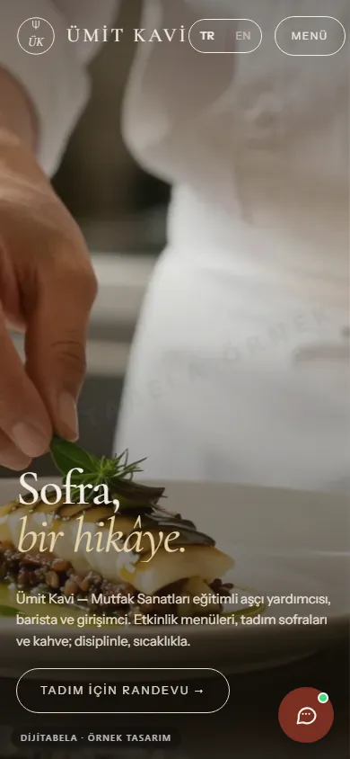
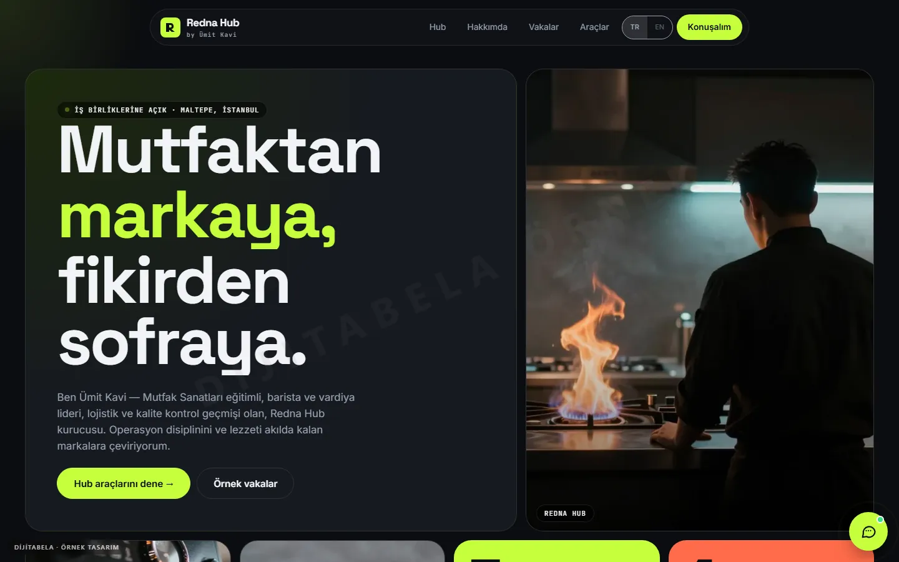
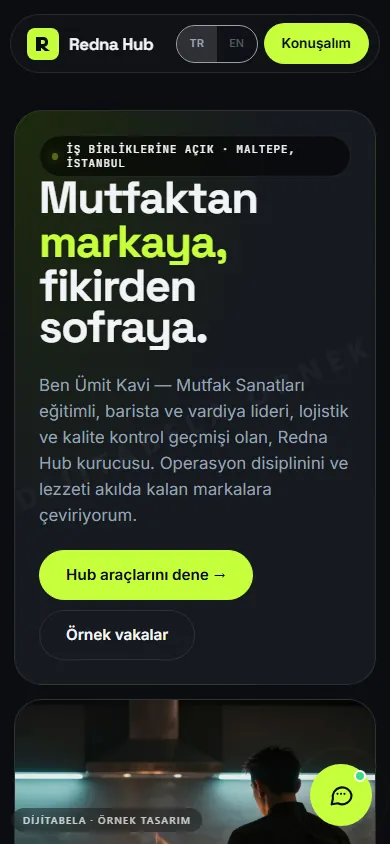
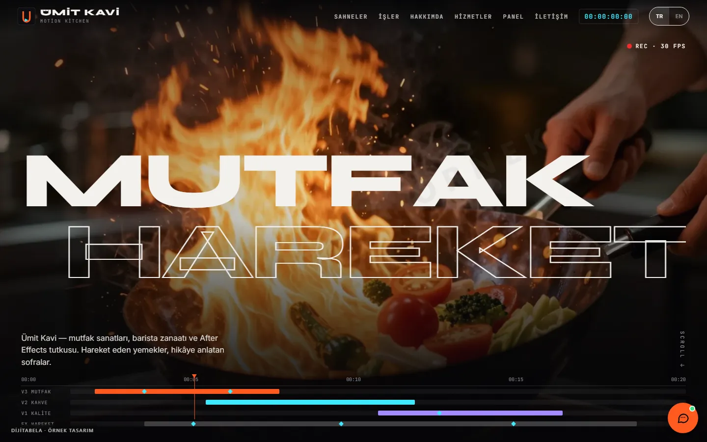
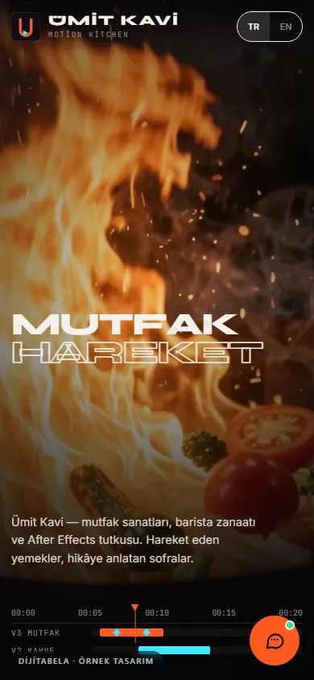

Mutfak Sanatları eğitimi, barista ve vardiya liderliği, lojistik ve kalite kontrol geçmişi, After Effects tutkusu ve Redna Hub girişimi — hepsi tek kişisel sitede. Her seçenek gerçek fotoğraf kalitesinde görsellerle, çalışan iş geliştirme araçlarıyla (yapay zekâ asistan, randevu, teklif hesaplayıcı, CRM formu, QR kartvizit, TR/EN) hazırlandı.


Lüks editoryal. Krem zemin, devasa serif tipografi, tam ekran fotoğraf ve yatay kaydırmalı “menü hikâyesi”. Michelin sadeliği.


Girişimci ve canlı: koyu zemin, limon yeşili vurgu, bento ızgara, sayaçlar ve “örnek vaka” kartları. Redna Hub çatısı altında iş birliği çağrısı.


After Effects tutkusunu gösteren sinematik site: Ken Burns hareketli hero, timeline göstergesi, kaydırmayla ilerleyen sahneler ve kinetik tipografi.